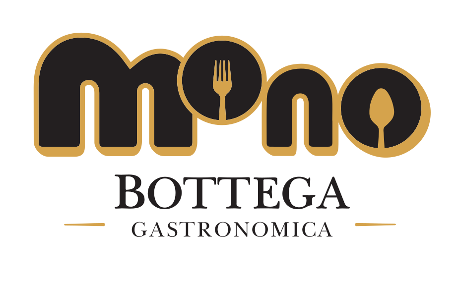

Il ritmo giusto.
Un invito a fermarsi, anche solo un po' di più.

Bottega Gastronomica Scarica appAperitivo
Non abbondanza casuale, ma piccoli piatti, bicchieri giusti e una tavola che invita a restare.
Fascia serale
Pane, olio, vino, assaggi e piccoli piatti: l'aperitivo MONO è una pausa costruita bene, con atmosfera da bottega e precisione da servizio.
Un invito a fermarsi, anche solo un po' di più.
Gastronomia pensata per essere condivisa con eleganza.
Una pausa contemporanea, semplice e riconoscibile.
Rito contemporaneo
L'aperitivo MONO è il punto in cui la bottega diventa bistrot: resti per un bicchiere, scopri un prodotto, torni nell'app per il prossimo invito o per portare qualcosa a casa.